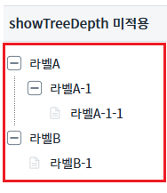
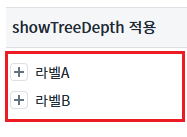
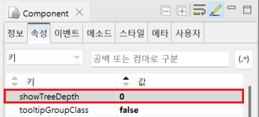

Treeview의 'showTreeDepth' 속성을 사용하여 초기 로딩시 확장되어 보여질 노드의 depth값을 설정하는 예제입니다.
showTreeDepth 미적용
showTreeDepth 적용
1
STEP 1: 결과를 확인합니다.
모든 노드가 펼쳐져 있는 것을 확인합니다.
Image 1.브라우저(Chrome) 실행 예시

1
STEP 1: 결과를 확인합니다.
가장 상위 노드까지만 보이는 것을 확인합니다.
Image 2.브라우저(Chrome) 실행 예시

1
Treeview의 속성을 정의합니다.
[필수] showTreeDepth="depth값"
(옵션 설명)
초기 로딩시 확장되어 보여질 노드의 depth값을 숫자로 입력한다.
Image 3.웹스퀘어 스튜디오의 Component View 예시 - depth값 추가

Example 1.Source
<!-- Treeview 의 소스 본문 예시 --> <w2:treeview showTreeDepth="0"> <!-- 중략 --> </w2:treeview>
showTreeDepth